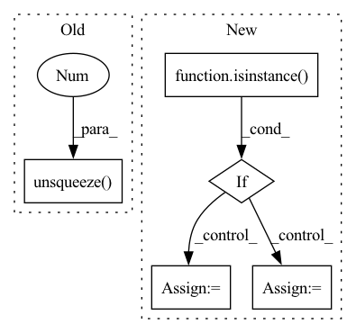

Pattern ID :23618
Before Change
lengths = all_lengths + torch.rand((ray_num, point_num)).to(target_device) * resolution
// sampled coords is (col_id, col_id)
if output_samples:
ray_raw = torch.sum(torch.cat([sampled_coords / focal, -torch.ones(sampled_coords.shape[0], 1, dtype = torch.float32).to(target_device)], dim = -1).unsqueeze(-2 ) * cam_tf[:, :-1], dim = -1)
pts = cam_tf[:, -1] + ray_raw[:, None, :] * lengths[:, :, None]
return torch.cat((pts, ray_raw.unsqueeze(-2).repeat(1, point_num, 1)), dim = -1), lengths, output_rgb, torch.cat((cam_tf[:, -1].unsqueeze(0).repeat(ray_raw.shape[0], 1), ray_raw), dim = -1)
ray_raw = torch.sum(torch.cat([(sampled_coords) / focal, -torch.ones(sampled_coords.shape[0], 1, dtype = torch.float32).to(target_device)], dim = -1).unsqueeze(-2) * cam_tf[:, :-1], dim = -1)After Change
indices = torch.randint(0, max_id, (ray_num,)).to(target_device)
output_rgb = rgbs[indices]
sampled_coords = coords[indices].to(torch.float32) + 0.5 // shift half pixel
if isinstance( focal, Iterable) :
sampled_coords[..., 0] /= focal[1]
sampled_coords[..., 1] /= focal[0]
else:
sampled_coords /= focal
// sampled coords is (col_id, col_id)In pattern: SUPERPATTERN
Frequency: 3
Non-data size: 5
Instances Fragment ID: 73833734
Project Name: enigmatisms/nerf
Commit Name: 6540170a567b47e4c9f65c604c10931ad96d9be5
Time: 2022-07-10
Author: 984041003@qq.com
File Name: py/utils.py
M Class Name: AnonimousClass
N Class Name: AnonimousClass
M Method Name: validSampler(9)
N Method Name: validSampler(11)
M Parent Class:
N Parent Class:
M File Name: py/utils.py
N File Name: py/utils.py
M Start Line: 69
M End Line: 85
N Start Line: 73
N End Line: 90
Before Change
losses = self.loss(y_pred, target)
// weight samples
if weight is not None:
losses = losses * weight.unsqueeze(-1 )
self._update_losses_and_lengths(losses, lengths)
def _update_losses_and_lengths(self, losses: torch.Tensor, lengths: torch.Tensor):
losses = self.mask_losses(losses, lengths)After Change
torch.Tensor: loss as a single number for backpropagation
// unpack weight
if isinstance(target, (list, tuple)) and not isinstance( target, rnn.PackedSequence) :
target, weight = target
else:
weight = None
// unpack target
if isinstance(target, rnn.PackedSequence): Fragment ID: 73833751
Project Name: jdb78/pytorch-forecasting
Commit Name: 92f88552bd5b11a06841b9a2ab967e0ea856e59d
Time: 2020-12-23
Author: beitner.jan@bcg.com
File Name: pytorch_forecasting/metrics.py
M Class Name: MultiHorizonMetric
N Class Name: MultiHorizonMetric
M Method Name: update(3)
N Method Name: update(3)
M Parent Class: Metric
N Parent Class: Metric
M File Name: pytorch_forecasting/metrics.py
N File Name: pytorch_forecasting/metrics.py
M Start Line: 311
M End Line: 321
N Start Line: 404
N End Line: 418
Before Change
// preprocessing
x = normalizeMeanVariance(img_resized)
x = torch.from_numpy(x).permute(2, 0, 1) // [h, w, c] to [c, h, w]
x = Variable(x.unsqueeze(0 ) ) // [c, h, w] to [b, c, h, w]
x = x.to(device)
// forward passAfter Change
return new_state_dict
def test_net(canvas_size, mag_ratio, net, image, text_threshold, link_threshold, low_text, poly, device, estimate_num_chars=False):
if isinstance( image, np.ndarray) and len(image.shape) == 4: // image is batch of np arrays
image_arrs = image
else: // image is single numpy array
image_arrs = [image]
img_resized_list = []
// resize Fragment ID: 73833746
Project Name: jaidedai/easyocr
Commit Name: 78be56f87d091dfcea6d2289948fc86cc7188cf7
Time: 2021-06-12
Author: samhunsadamant@gmail.com
File Name: easyocr/detection.py
M Class Name: AnonimousClass
N Class Name: AnonimousClass
M Method Name: test_net(10)
N Method Name: test_net(10)
M Parent Class:
N Parent Class:
M File Name: easyocr/detection.py
N File Name: easyocr/detection.py
M Start Line: 26
M End Line: 58
N Start Line: 25
N End Line: 71